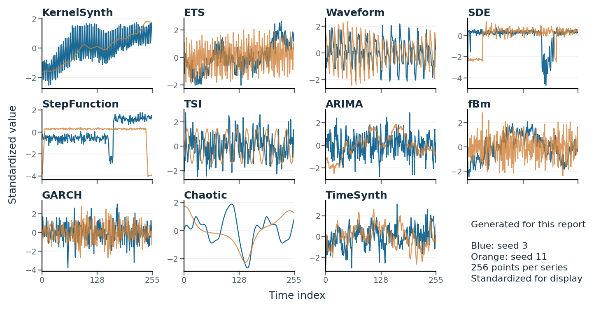
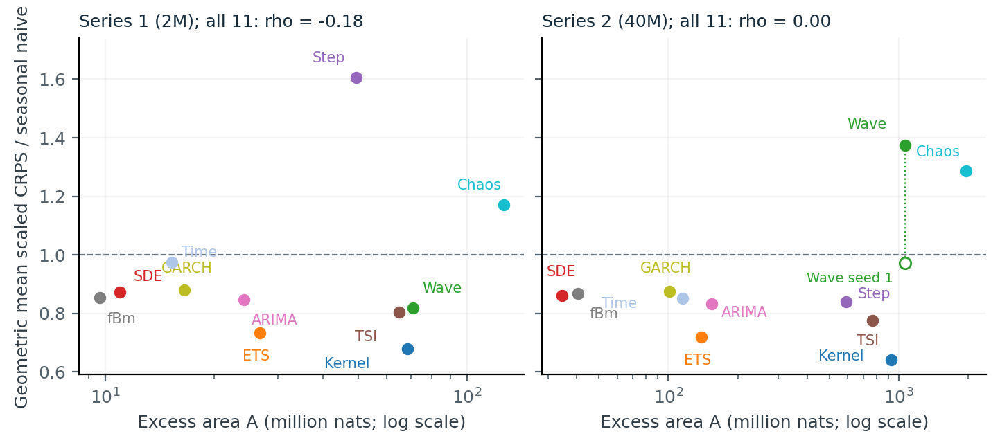

Which synthetic data should you train on?
Suppose you are pretraining a forecasting model and can generate as much data as you want. Should you use periodic signals, noisy trends, volatility clusters, or chaotic trajectories? Generating another million series is straightforward. Deciding whether they will teach the model something useful for real forecasting is harder.
Training loss offers an incomplete answer. A low loss may indicate an easy task; a high loss may reflect unpredictable noise. Even substantial learning on a synthetic distribution may produce little benefit elsewhere. To choose data, we need to connect what happens during pretraining with what the resulting model can forecast.
We built episynth to make that comparison reproducible. It is a Python research library that connects seeded time-series generators, probabilistic transformer training, learning-curve measurements, and evaluation on real forecasting tasks. Its central question is practical: which synthetic generators deserve your pretraining budget?
This post walks through the library and a completed experiment using it. We compared eleven generators at two training budgets. KernelSynth and ETS transferred best, while our epiplexity-inspired measurement did not reliably rank all generators. The library makes both findings inspectable through saved losses, checkpoints, and benchmark scores.
Source code · Documentation · Demo notebook
When episynth is useful
Use episynth when you are investigating synthetic data for time-series pretraining. For example, you might want to compare a new generator with established priors, test whether a mixture improves transfer, or investigate whether training-time measurements can screen candidate data sources. A comparison needs the same forecasting task, model, and budget across candidates; otherwise, changes in the training setup can obscure the effect of the data.
The library supplies that shared setup:
| Stage | What episynth handles |
|---|---|
| Generate | Seeded series from eleven prior families, precomputed corpora, or mixtures |
| Form tasks | Context–future windows, padding, masks, and dequantization |
| Train | A probabilistic Moirai model, pre-update loss logging, EMA weights, checkpoints, and resumption |
| Measure | Prequential loss and its signed decomposition into residual and structural-proxy terms |
| Evaluate | GIFT-Eval forecasts, per-window metrics, and configuration summaries |
You can use the generators independently or run the full pipeline. The current training integration uses the library's Moirai port. Its measurements describe a specified learner and training procedure; using them to choose data still requires validation against your downstream tasks.
Start with reproducible synthetic series
The package requires Python 3.10 or newer. Install it from the repository in an activated environment:
git clone https://github.com/intsystems/Epiplexity.git
cd Epiplexity
python -m pip install -e .
Generating data takes a few lines:
import numpy as np
from episynth.generators import GENERATORS
generator = GENERATORS["sde"](length=1024)
series = generator.generate(np.arange(8))
print(series.shape) # (8, 1024)
Each seed identifies a series, so you can revisit examples and construct separate training and held-out seed ranges. Window selection also depends on the series seed, independently of batch composition. This makes it possible to compare runs using the same examples without storing every generated window.
The eleven families follow the synthetic priors studied in Mix, Don't Pick: KernelSynth, ETS, Waveform, SDE, StepFunction, TSI, ARIMA, fBm, GARCH, Chaotic, and TimeSynth. Together they cover smooth variation, trends, seasonality, discontinuities, stochastic dynamics, and changing volatility.

Figure 1. Examples of the available priors, independently standardized for display. These illustrate generator behavior; they are not archived training traces.
For expensive generators, episynth.corpus writes seeded series to disk for reuse. The training interface accepts either these corpora or online generation, and Mixture combines sources into an equal mixture. This lets you change the data source while keeping the rest of the experiment fixed.
What the learning-curve measurement means
The motivation comes from epiplexity: the model-description part of an optimal two-part code available to a computationally bounded observer. One part describes learned structure; the other pays for residual uncertainty. The observer and its computational budget matter.
episynth implements an accessible, training-dependent proxy using prequential prediction: score each batch before learning from it, then update the model. Early predictions cost more when the model has yet to learn regularities. Subtracting the final predictor's average held-out loss from the accumulated loss gives an excess area.
For per-window losses in nats, the estimator returns:
\[L=\frac{\sum_{i=1}^{N}\ell_i}{\ln 2},\qquad H=\frac{N\bar\ell_{\mathrm{heldout}}}{\ln 2},\qquad S=L-H.\]Here, total_bits is the accumulated predictive cost, data_part_bits is the endpoint residual estimate, and model_part_bits is the signed excess. n_windows records the budget. A high, flat loss curve can have little excess, whereas a sustained loss decrease creates a larger area.
The excess is a structural proxy, not an exact computation of formal epiplexity or a guarantee of useful transfer. It depends on architecture, optimizer, data order, budget, and endpoint choice. We retain negative values rather than clipping them. Because forecasts use continuous densities, the bit-valued outputs are density-based measurements; producing a literal encoded file would additionally require quantization and a codec. Keep units and dequantization consistent across comparisons.
Train a model and obtain the estimate
The following small run connects the main components. It is a demonstration budget, far below the experiments discussed later. The example targets a CUDA GPU; for a CPU trial, set device="cpu" and precision="fp32".
from episynth.estimators import build
from episynth.model.moirai import small
from episynth.training import TrainConfig, build_model
from episynth.windows import WindowSpec
spec = WindowSpec(context_lengths=(128, 256, 512), horizon=64)
model = build_model(
small(
patch_sizes=(32,),
components=("student_t", "normal_fixed", "log_normal"),
),
init_seed=0,
)
config = TrainConfig(
n_windows=8192,
batch_size=64,
warmup_steps=16,
heldout_windows=512,
checkpoint_fractions=(1.0,),
device="cuda",
precision="bf16",
)
result = build("prequential").run(
model, generator, spec, config, "runs/sde-demo"
)
print(result)
This continues the data-generation example. WindowSpec defines the forecasting task; TrainConfig fixes the training budget and evaluation settings. The model starts from scratch. During training, the estimator records each window's loss before its batch update and evaluates the final raw and exponentially averaged (EMA) weights on separate held-out seeds. The default decomposition uses the EMA endpoint.
The output directory contains the resolved training configuration, window_loss.f32, endpoint loss files, and checkpoints including ckpt_1.pt. These artifacts let you inspect the learning trajectory and recompute the decomposition without training again:
from episynth.estimators.prequential import PrequentialEstimator
result = PrequentialEstimator(variant="ema").from_run_dir("runs/sde-demo")
print(result["model_part_bits"], result["data_part_bits"])
Use variant="raw" to check endpoint sensitivity. This reader needs the per-window loss files; a steps.csv export alone is insufficient. The report has a separate reconstruction script for the committed batch-mean exports.
For larger experiments, python -m episynth.train accepts a JSON configuration and --set overrides, resumes saved runs, and writes estimator_result.json. The package guide documents configuration and corpus workflows.
Which measurement methods are ready?
The measurement contracts distinguish current functionality from the proposed scope:
| Method | Purpose | Current status |
|---|---|---|
| Prequential coding | Measure accumulated predictive cost and signed excess | Implemented; used in our transfer study |
| Bayesian predictive log-loss | Compare a learned forecaster with a known-prior reference | OU/AR(1) quadrature functions implemented in checks.ou_bayes |
| Requential coding | Describe learned predictions through teacher-selected samples | Registered stub; run raises NotImplementedError |
| Predictive V-information | Measure the predictive benefit of observing context | Proposed; no estimator implemented |
The OU reference is useful for checking whether a trained model approaches the predictive loss implied by a known generative process. It provides joint and pointwise scores; use the pointwise reference when comparing with Moirai's forecast factorization. Custom estimators can implement EpiplexityEstimator and register a name with @register.
Check whether the learned structure transfers
The next step is to evaluate the checkpoint on real data. Given a local snapshot of Salesforce/GiftEval, the library's evaluator can score the demonstration run:
python -m episynth.evaluation.run \
--data /path/to/GiftEval --out eval/sde-demo --model moirai \
--checkpoint runs/sde-demo/ckpt_1.pt \
--config-json runs/sde-demo/config.json --weights ema --device cuda
It writes per-window metrics and summary.csv, with one row per configuration. A --model seasonal_naive run supplies baseline scores. This final stage answers whether a source teaches useful forecasting behavior for the benchmark you chose.
Our technical report applies this workflow to eleven priors. We trained the same 10.75-million-parameter Moirai transformer from scratch at approximately 2 million and 40 million windows per prior, with a horizon of 64. We evaluated the final EMA models without fine-tuning on 55 short-term GIFT-Eval configurations.
The main score is sample-based CRPS, which evaluates forecast distributions. We divide each configuration's score by seasonal naive and take their equally weighted geometric mean. Lower is better; below one beats the baseline. Selected results show why both the training measurement and downstream evaluation matter:
| Prior | Area, 2M | CRPS ratio, 2M | Area, 40M | CRPS ratio, 40M |
|---|---|---|---|---|
| KernelSynth | 68.4 | 0.678 | 926.1 | 0.639 |
| ETS | 26.7 | 0.731 | 138.6 | 0.717 |
| Waveform | 70.9 | 0.818 | 1061.2 | 1.373 |
| Chaotic | 126.2 | 1.171 | 1956.6 | 1.285 |
Table 1. Selected primary runs from the report. Areas use the EMA endpoint and are reported in million nats, before conversion to bits. The correlations below use all eleven priors.
KernelSynth ranked first and ETS second at both budgets. Yet Chaotic produced the largest excess area and transferred worse than seasonal naive. Across all eleven families, the Spearman correlations between area and downstream CRPS ratio were −0.18 at 2M and 0.00 at 40M. Their 95% bootstrap intervals, [−0.81, 0.51] and [−0.89, 0.61], are broad: this study does not establish a reliable ranking rule.

Figure 2. Each filled point represents one prior. The open Waveform point is an additional initialization, excluded from the correlations. The dashed line marks seasonal-naive performance. Source: technical report, Fig. 2.
The saved artifacts also expose two practical sensitivities. At 40M, switching ARIMA's endpoint from EMA to raw weights changes its area from 154.5 to 15.4 million nats. Waveform's two initializations have almost identical areas, 1061.2 and 1063.6, but CRPS ratios of 1.373 and 0.972; an extreme forecast failure contributes to the difference. Inspecting only an area or a typical-task score would miss these effects.
These results cover one architecture and mostly one initialization per prior. Budgets match window counts, rather than measured total compute. Stronger subset correlations and early-prefix analyses are exploratory; the report supplies the full tables and limitations. Archived training was conducted by Danila Chernousov (Chernousovdv); the report analyzes those saved runs.
Use the library to test a data-selection hypothesis
A practical first experiment is to compare your candidate generator with KernelSynth and ETS under a common task and budget. Save the learning measurements, fix the endpoint convention, then evaluate downstream forecasts. If you want to select priors using area alone, validate that rule on new generator families and repeat initializations before using it to allocate larger budgets.
episynth provides the pieces for that experiment: reproducible synthetic tasks, training logs that support recomputation, an implemented prequential estimator, and a forecasting benchmark interface. Our completed comparison identifies useful priors under one protocol and shows why measuring learning progress must be paired with checking its relevance to the target task.
Start with the demo notebook or the examples above. The report and reproduction scripts provide the experimental evidence behind the results.